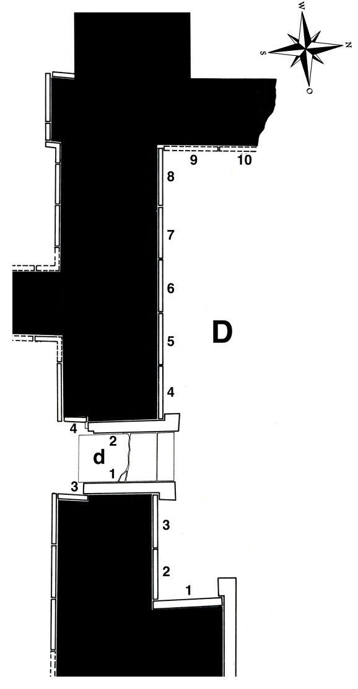

Room D
The “chambers” D and E (as identified by Layard) were not really rooms at all—the walls he uncovered belonged to the outer façade of the throne room, facing an open courtyard, that (together with the middle part of the façade, ED) had been eroded by a ravine in relatively recent times. Mallowan, in his 1953 excavations, discovered that the courtyard connected the throne room with another wing of the palace further to the north and was surrounded by subsidiary rooms, for example, a guardroom designated EC.
In D, Layard found 8 slabs (as well as two more in an entrance, and two lamassu bulls), all of which had fallen over and were broken, except for one (D-7). Another relief (D-9), found in secondary use in the Southwest Palace, was later identified as belonging here, originally attached to a wall that was at right angles with D-8.
Layard gave descriptions of the reliefs, but made a drawing of just one (D-7), and, following instructions from the British Museum, covered most of them up after the end of excavations. Only parts of three slabs (D-2, D-7 & D-9) were taken to Museums (the Louvre and the BM). The remaining reliefs were re-excavated by Mallowan in the early 1950s and re-erected in situ by the Iraqi Antiquities Service in 1956.
In E, Layard found five slabs and again two more in an entrance with two lamassu. Only the lamassu and the lower parts of the reliefs remain in situ. The upper parts of the slabs are lost except one (E-3, now in Berlin), and are only known from Layard’s descriptions and drawings.
Two more lamassu are all that remain of the middle part of the façade ED. Layard describes what he found: “On the edge of the ravine, to the north of chamber B, ... I discovered two enormous winged bulls, ... which had fallen from their places. They did not form an entrance, but each one stood alone, adjoining the great slabs with the colossal winged figures in chambers D and E. I was unable to raise them, and the sculptured face of the slab was downward. They had evidently been long exposed to the atmosphere, and the heads had been greatly injured” (Nineveh I p. 88). Both were raised and restored in situ by the Iraqi Antiquities Service.
Click on D in the middle of the room to see all panels positioned in their respective walls, or on the individual panels along the inner walls and in the entryways to go to CDLI pages associated with them.
 |
Relief Slabs by Collection
British Museum, London, UK |